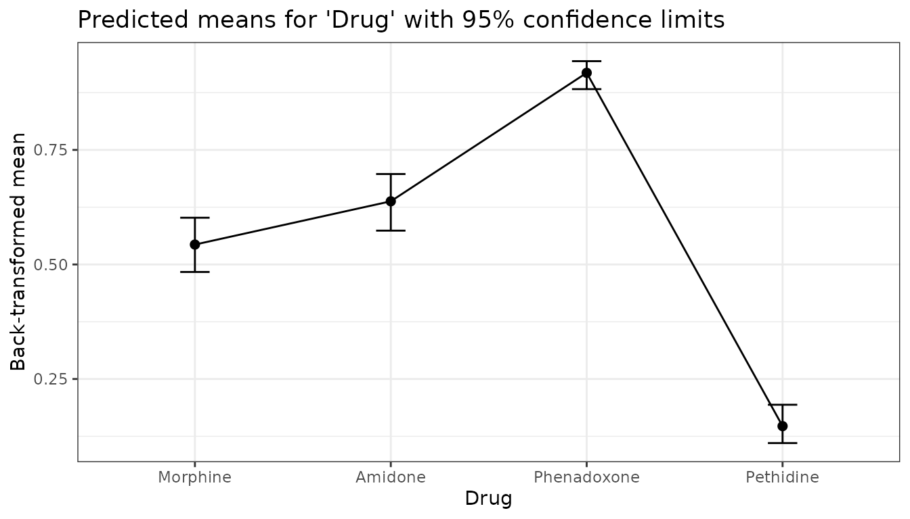

For generalized linear (mixed) models, and for models of a
transformed response such as log(y), the means are
estimated on the scale of the model, the link scale, and then
back-transformed to the scale of the data, the response scale.
predictmeans does the tests on the link scale, where the model is
linear, and reports both scales:
-
means:estimate,std.error,conf.low,conf.highon the link scale, andresponse,response.std.error,response.conf.low,response.conf.highon the response scale; -
pairs: differences on the link scale and, for a log link (ortrans = exp), the ratio of the two means with its confidence limits; for a logit link, the odds ratio.
The response-scale standard error comes from the delta method, as
emmeans gives with type = "response". The confidence limits
are the back-transformed link-scale limits, so they are not symmetric
around the mean.
Binomial GLM: probabilities and odds ratios
The Drug data give the number of mice responding
(R) out of N for four drugs at several
doses.
data(Drug)
fm_drug <- glm(cbind(R, N - R) ~ Drug + log10Dose, family = binomial, data = Drug)
pm_drug <- predictmeans(fm_drug, "Drug", pairwise = TRUE, plot = FALSE, prtnum = FALSE)
pm_drug$means[, c("Drug", "estimate", "response", "response.std.error",
"response.conf.low", "response.conf.high")]
#> Drug estimate response response.std.error response.conf.low
#> 1 Morphine 0.1739917 0.5433885 0.03034579 0.4743527
#> 2 Amidone 0.5660805 0.6378583 0.03166332 0.5636524
#> 3 Phenadoxone 2.4185555 0.9182314 0.01536127 0.8760708
#> 4 Pethidine -1.7574624 0.1471084 0.02125403 0.1052064
#> response.conf.high
#> 1 0.6107968
#> 2 0.7060264
#> 3 0.9469180
#> 4 0.2019331estimate is the log odds of a response at the mean log
dose; response is the probability. The comparisons are
tested on the log-odds scale, and each difference is the log of an odds
ratio:
pm_drug$pairs[, c("level1", "level2", "estimate", "p.value",
"odds.ratio", "odds.ratio.conf.low", "odds.ratio.conf.high")]
#> level1 level2 estimate p.value odds.ratio
#> 1 Morphine Amidone -0.3920888 5.750270e-02 0.6756441
#> 2 Morphine Phenadoxone -2.2445638 3.436176e-06 0.1059738
#> 3 Amidone Phenadoxone -1.8524750 2.056205e-05 0.1568485
#> 4 Morphine Pethidine 1.9314541 1.150365e-05 6.8995356
#> 5 Amidone Pethidine 2.3235429 3.665914e-06 10.2117898
#> 6 Phenadoxone Pethidine 4.1760179 4.541004e-07 65.1060753
#> odds.ratio.conf.low odds.ratio.conf.high
#> 1 0.44950381 1.0155531
#> 2 0.06393713 0.1756481
#> 3 0.09334124 0.2635646
#> 4 4.16993639 11.4159036
#> 5 6.02784628 17.2998191
#> 6 31.06115941 136.4662854
ggplot2::autoplot(pm_drug, type = "response")
Poisson GLMM: counts and rate ratios
Egg counts of individual females, in containers within populations; the innermost random effect (one level per female) models overdispersion.
data(Poisson_ind)
fm_egg <- glmer(Egg ~ Treatment + Habitat + (1 | Population/Container/individual),
family = poisson, data = Poisson_ind)
pm_egg <- predictmeans(fm_egg, "Treatment", pairwise = TRUE, plot = FALSE, prtnum = FALSE)
pm_egg$means[, c("Treatment", "estimate", "response", "response.std.error",
"response.conf.low", "response.conf.high")]
#> Treatment estimate response response.std.error response.conf.low
#> 1 Exp 1.790814 5.994327 0.9834990 4.341871
#> 2 Cont 1.282368 3.605166 0.5965019 2.604225
#> response.conf.high
#> 1 8.275686
#> 2 4.990820
pm_egg$pairs[, c("level1", "level2", "p.value", "ratio", "ratio.conf.low", "ratio.conf.high")]
#> level1 level2 p.value ratio ratio.conf.low ratio.conf.high
#> 1 Exp Cont 1.59407e-21 1.662705 1.50571 1.836069The ratio is the expected count under Exp
divided by that under Cont.
For a GLMM the back-transformed mean is the response of a
typical unit, one whose random effects are all zero. With a log
link this is smaller than the average count over all units, which is
exp(estimate + v/2), v being the total
variance of the random effects. Ratios are the same on both definitions,
which is one reason to report them.
bias_adjust = TRUE gives that population mean instead
(to second order, as emmeans’ bias.adjust), with the
random-effect variance as default sigma;
average = "response" averages the back-transformed cells
over the other factors (here Habitat), rather than back-transforming the
average on the link scale:
pm_pop <- predictmeans(fm_egg, "Treatment", bias_adjust = TRUE, average = "response",
plot = FALSE, prtnum = FALSE)
pm_pop$means[, c("Treatment", "response", "response.std.error")]
#> Treatment response response.std.error
#> 1 Exp 7.282088 1.1947757
#> 2 Cont 4.379663 0.7246387
pm_pop$settings[c("bias_adjust", "average")]
#> $bias_adjust
#> [1] 0.6532427
#>
#> $average
#> [1] "response"A transformed response: trans = exp
When the response is transformed before modelling, give the
back-transformation with trans (and transOff
for, e.g., log(y + 1)). Differences of log means are logs
of ratios of geometric means:
data(Body_length)
fm_len <- lmer(log(BodyL) ~ Treatment + Habitat + Sex + (1 | Population/Container),
data = Body_length)
pm_len <- predictmeans(fm_len, "Treatment", pairwise = TRUE, trans = exp,
plot = FALSE, prtnum = FALSE)
pm_len$means[, c("Treatment", "estimate", "response", "response.std.error")]
#> Treatment estimate response response.std.error
#> 1 Cont 2.621319 13.75386 0.3655397
#> 2 Exp 2.644563 14.07730 0.3741359
pm_len$pairs[, c("level1", "level2", "p.value", "ratio", "ratio.conf.low", "ratio.conf.high")]
#> level1 level2 p.value ratio ratio.conf.low ratio.conf.high
#> 1 Cont Exp 9.949753e-06 0.977024 0.9670482 0.9871028Binomial GLMM: odds ratio and R²
The Clinical data give the number of favourable
responses out of the patients in each treatment group at each of eight
clinics.
data(Clinical)
fm_clin <- glmer(cbind(Favorable, Total - Favorable) ~ Treatment + (1 | Clinic),
family = binomial, data = Clinical)
pm_clin <- predictmeans(fm_clin, "Treatment", pairwise = TRUE, plot = FALSE, prtnum = FALSE)
pm_clin$means[, c("Treatment", "response", "response.conf.low", "response.conf.high")]
#> Treatment response response.conf.low response.conf.high
#> 1 control 0.2321034 0.07559056 0.5276915
#> 2 drug 0.3873968 0.14775968 0.6975684
pm_clin$pairs[, c("level1", "level2", "p.value", "odds.ratio",
"odds.ratio.conf.low", "odds.ratio.conf.high")]
#> level1 level2 p.value odds.ratio odds.ratio.conf.low odds.ratio.conf.high
#> 1 control drug 0.04362228 0.4779715 0.234923 0.9724753R2_model() gives the share of the variance explained, as
numbers: Piepho’s R² (the default, also printed by
R2_glmm()) or Nakagawa and Schielzeth’s marginal and
conditional R².
R2_model(fm_clin)
#> # Adjusted R2 for mixed models (Piepho)
#> Total Fixed Random Clinic
#> 75.71% 4.77% 70.94% 70.94%
R2_model(fm_clin, method = "nakagawa")
#> # R2 for mixed models (Nakagawa and Schielzeth)
#> Marginal Conditional
#> 2.71% 38.70%The two need not agree. For counts out of totals, as here, Piepho’s R² takes the residual variance from the model’s working weights: with up to 37 patients per group a proportion is measured precisely, so the random clinic effects explain most of the rest. Nakagawa’s R² uses the variance of the latent scale of a single yes/no response, π²/3 for the logit link, whatever the group sizes. For binary (0/1) data both use the same latent variance.
More
-
vignette("R2_glmm", package = "predictmeans"): adjusted R² for mixed models. -
vignette("contrasts", package = "predictmeans"): contrasts, joint tests and slopes; they are on the link scale too. -
?predictmeans(argumentstrans,transOff,count),?R2_model.